Q
Q1:
Mill Hill Golf Club,
Barnet Way/A1, nr. Highwood Hill
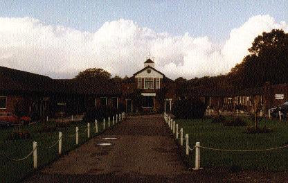
THE AVENGERS: The Thirteenth Hole
(Roy Baker: Autumn 1965)
Reed (Patrick Allen) and Jackson (Victor
Maddern) shoot a man at the
13th hole, and when Steed (Patrick Macnee) and Mrs
Peel (Diana Rigg)
arrive to investigate at Craigleigh Golf Club, they are met by Collins
(Francis Matthews). Mrs Peel, watching Adams (Peter
Jones) play Reed,
is attacked by a golf cart, but later helps Steed to win against Reed.
Reed captures Mrs Peel when Steed plays Adams, and Jackson plants a
bomb at the 12th. Steed drives a ball to stop the fleeing Colonel
Watson (Hugh Manning).
DEPARTMENT S: Handicap Dead (John
Gilling:
Summer 1968)
At During a tournament at Colindale Golf Club, Scotland, an official
(Tony Thawnton) asks Bill (James Drake)
if he has seen Johnnie Collins.
Later Eddie has to inform Mrs Lynne that Johnnie is missing.
Q2: Stirling Way,
Borehamwood
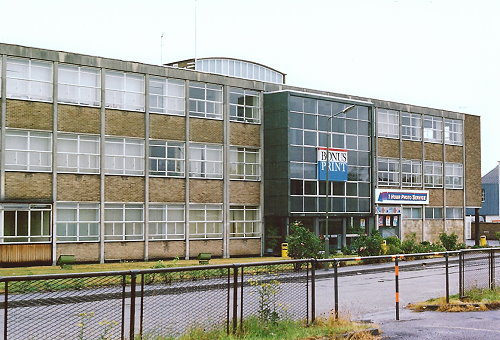
DANGER MAN: Under the Lake (Seth
Holt: 1959)
John Drake is in Zurich with Colonel Keller watching the ex-Nazi
general Von Klaus (Christopher Rhodes) and his
daughter, Mitzi (Moira
Redmond) leave an office block (Bonus Print
building, demolished) and
drive off in a chauffeur driven car.
DANGER MAN: The Ubiquitous Mr. Lovegrove
(Don Chaffey: September 1964)
John Drake is seen driving his car past the A1/Barnet Lane Roundabout
and North up the A1 on his way to a meeting at London Airport.
THE SAINT: The Rhine Maiden (James
Hill:
November 1964)
Simon Templar and Julia Harrison race to Offenberg in Simon's Volvo
THE AVENGERS: How to Succeed ... at Murder
(Don Leaver: February 1966)
Mrs Peel (Diana Rigg) in her Lotus follows Mary
Merryweather in her car
along Ripon Way on to Stirling Way as they head towards the keep fit
class.
THE AVENGERS: Super Secret Cypher Snatch
(John Hough: June 1968)
Vickers (Donald Gee) and Maskin (Simon
Oats) follow Peters (John
Carlisle) back to his flat (corner of Ripon Way
& Stangate
Crescent, now demolished) in a CGC van and Vickers shoots him
through a
window. Later Tara King (Linda Thorson) slides down
a ladder from the
same window.
(Identified by Patrick Walsh, October 2003)

photo: Geoff Dodd
Film:
LET'S GET MARRIED
(1960)
BATTLE BENEATH THE EARTH
(1966)
Q3: The Rise, Borehamwood

photo: Geoff Dodd
THE HUMAN JUNGLE: Wild
Goose Chase (Vernon Sewell: ???)
A police car arrives to investigate a suspected burglar who calls
himself ‘William Jones’ (Vladek Shaybal). Detective
Constable Cowan
(John Bonney) takes him in for questioning.
(Identified by Geoff Dodd, October 2013)
THE AVENGERS: Quick-Quick Slow Death (James
Hill: October 1965)
Willi Fehr (Michael Peake) chases his pram as it
runs down hill. It
crashes depositing the corpse inside onto the pavement (corner
of
Deacons Hill Road and The Rise and shots of Fehr running after the pram
along The Rise).
(Spotted by Michael Richardson, 1989)
THE AVENGERS: Requiem (Don Chaffey:
January
1969)
After Mother's funeral Tara (Linda Thorson), Major
Firth (John Cairney)
and the Jill (Kathja Wyeth) a nurse drive the a
hearse to the home of
Steed's friend Cleaver (Harvey Ashby). Murray (Denis
Shaw) and Rista
(Terence Sewards) leave the house and drive off in
the van just as the
hurse arrives. Firth goes to the house, 25 Cranbrook Road (25
The Rise)
but when Bobby Cleaver (Harvey Ashby) opens the
door he collapses and
dies.
Q4: Allum Lane Cemetery,
Allum Lane, Borehamwood

DEPARTMENT S: The Double Death of
Charlie Crippen (John Gilling: Summer 1968)
Jason King (Peter Wyngarde) arrives at the gates of
Villa Fantelle in
his maroon Bentley and attempts to talk his way past the guards. Later
Curtis (Dennis Alaba Peters) persuades the guard to
allow him and the
rest of the team into the villa.
DEPARTMENT S: Spencer Bodily is Sixty Years Old
(Leslie Norman: 1969)
Spencer Bodily's remains are stolen and taken to be disposed of at
Fernvale Crematorium.
DEPARTMENT S: The Duplicated Man (Paul
Dickson: Spring 1969)
Annabelle Hurst arrives at the gates of 'Lucy Williams Home' for
retired gentlewomen to talk to Mrs Harvey. She is observed entering by
two Russian agents.
JASON KING: A Page Before Dying (Jeremy
Summers: 1971)
Ryland watches from across the border as a hearse carries a coffin into
a West Berlin cemetery.
Q5: Elstree Hill Lodge,
Watling Street/Allum Lane, Elstree
THE AVENGERS: Epic (James Hill:
February 1967)
Steed (Patrick Macnee) and Mrs Peel (Diana
Rigg) turn down Fitzroy Lane
in the Lotus to keep their appointment.
Q6: Elstree Lawns,
Edgwarebury Lane, Barnet Lane, Elstree
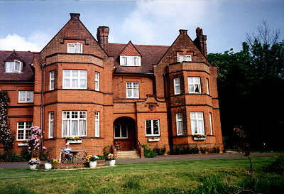
THE PROTECTORS: The Tiger and the Goat (Jeremy
Summers: 1973)
Commander Whiting lures the Contessa to a meeting in a derelict house.
Q7: Chantry, Barnet Lane,
Elstree
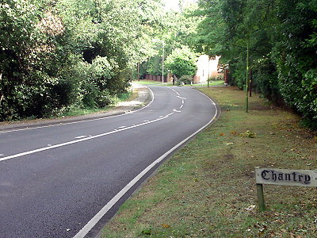
photo: Geoff Dodd
RANDALL AND HOPKIRK [DECEASED]:
All Work and No Pay
(Jeremy Summers: Early 1969)
Jeanie is summoned to the Foster brothers’ mansion to start her work
with them (she drives along Barnet Lane outside Chantry
heading West).
(Identified by Geoff Dodd, September 2009)
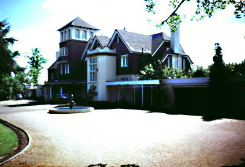
HAMMER HOUSE OF MYSTERY AND SUSPENSE:
Mark of the Devil (Val
Guest: Spring 1984)
Matt Halston's (John Paul) family home where he
celebrates the
engagement and marriage of his daughter Sara (Jenny Seagrove)
to Frank
Rowlett (Dirk Benedict), although the wedding party
is interrupted by a
visit from Detective Inspector Grant (George Sewell)
and Sergeant Kirby
(Peter Settelen).
Film:
MOSQUITO SQUADRON
(1969)
Q8: Edgwarebury Hotel,
Edgwarebury Lane, Elstree

SABER OF LONDON: The Missing Hours
(Ernest Morris: 1957)
Saber and Pete arrive at Bowden Manor to talk to Mrs Cartney.
SABER OF LONDON: Cheating Cheaters (1957/59)
Mr Danbury (Neil Hallet) arrives at the house of
Stephen Barnard.
MAN FROM INTERPOL: Soul Pedlars (Max
Varnel:
1957/59)
A trusted servant is caught stealing at Rossington Manor.
SABER OF LONDON: Ordeal Of Fear (Godfrey
Grason:
1957/59)
Sir Charles Orden arrives home with his new wife.
H. G. WELLS' INVISIBLE MAN:
Picnic With Death
(Pennington Richards: 1958)
Brady visits Fox Grange, the Norton family home with Dee (Lisa
Daniely)
only to find that the Nortons and Sally have left on a picnic. He
follows on horseback.
DANGER MAN: The Vacation (Patrick
McGoohan:
1960)
Georges (John Wynyard) shows Drake (Patrick
McGoohan) down to the
tennis court where he meets Veronica Baron (Jaqueline Ellis)
and asks
her to demonstrate her game with Marcel. They are interrupted by the
arrival of Ricki Clermont (Richard Clarke) who is
warned off by Baron
(Esmond Knight).
THE AVENGERS: You Have Just Been Murdered
(Robert Asher: July 1967)
Mrs Peel (Diana Rigg) watches Rathbone leave
Unwin's house. Steed
arrives at Unwin's and later fires a tracer onto the money case as
Unwin (Barrie Ingham) leaves his home.

The Norwegian Barn - destroyed by fire
THE AVENGERS: The Curious Case of the Countless Clues
(Don Sharp: January 1968)
Using a rifle wrapped in plastic, Earle (Anthony Bate)
guns down Scott
as he waters plants by his log cabin (The Norwegian Barn -
destroyed by
fire). Earle (Anthony Bate) and Gardiner (Kenneth
Cope) watch Steed and
Burgess at Burgess' home from their Citroen. Later they observe as
Doyle arrives to arrest Burgess. Later Steed (Patrick Macnee),
in his
Bentley, follows Earle and Gardiner to their cottage (Edgwarebury
gate
house). He later escapes only to have his car break down just
as
Stanley (Tony Selby) turns up in his break-down van.
RANDALL AND HOPKIRK [DECEASED]:
Who Killed Cock Robin?
(Roy Ward Baker: August 1968)
Jeff's Vauxhall arrives at the Howe family home. Beeches (David
Lodge)
goes on the run, is returned by the police and tends to the rear lawns.
THE AVENGERS: Wish You Were Here (Don
Chaffey: September 1968)
Tara (Linda Thorson) arrives at the Elizabethan
Hotel in her Lotus, but
is unable to leave when her car fails to start. Basil (Brook
Williams)
arrives and unloads his Austin 7 with the help of Mellor (Richard
Caldicott), but later finds his tyres let down. After the
guests have
left the hotel, Maxwell (Robert Urquhart) makes an
escape bid after his
staff are dealt with but is stopped by Tara and Basil.
DEPARTMENT S: A Ticket to Nowhere (Cyril
Frankel: Early 1969)
The hotel is the villain's HQ, Westerly Grange.
DEPARTMENT S: The Perfect Operation (Cyril
Frankel: February 1969)
Jason talks to Sir Curtis whilst they play croquet.
DEPARTMENT S: The Mysterious Man in the Flying Machine
(Cyril Frankel: Spring 1969)
Gerrard (Clinton Greyn) arrives at the villa and
later leaves by the
rear steps.
RANDALL AND HOPKIRK [DECEASED]:
The House on Haunted Hill
(Ray Austin: Summer 1969)
Walter and Henry (Dermot Kelly) flee from the
haunted Merston Manor, as
does Jeff (Mike Pratt) later on his visit. Jeff
returns and breaks in
at the rear of the building. (There is also extensive use of
the
interior of the hotel in this episode)
THE PERSUADERS!: A Death
In the Family (Sidney Hayers: 1971)
Uncle Lance's house.
THE PROTECTORS: The Numbers Game (Don
Chaffey:
1972)
Dr. Lawrence Savage (Richard Easton) arrives at his
home, The Old Barn,
in his Bentley and washes it before entering the house. Luigi (George
Innes), who has been hiding in the garage, removes a package
from
underneath the car but is caught in the act by Harry (Robert
Vaughn).
THE PROTECTORS: The Bodyguards (Don
Chaffey:
1972)
Chino (Anthony Chinn) delivers Harry (Robert
Vaughn) and the Contessa
to the late Ralph Corder's house. Later Harry is watched by Allan Mason
(Manning Redwood) as he patrols the grounds.
THE PROTECTORS: Chase (Harry Booth:
1972)
Harry Rule (Peter Vaughn) and the Contessa (Nyree
Dawn Porter) arrive
at her log cabin (the Norwegian Barn - destroyed by fire)
in Harry's
Jensen.
THE ADVENTURER: Somebody Doesn't Like Me (Cyril
Frankel: 1972)
Brady arrives in his car at a country club to meet Krista Magnus.
THE PROFFESIONALS: In the Public Interest (Pennant
Roberts: 1978)
George Cowley (Gordon Jackson) visits a restaurant
to meet with Chief
Constable Gerry Green (Paul Hardwick). Later Cowley
visits Green at
home to discuss his replacement.
HAMMER HOUSE OF MYSTERY AND SUSPENSE:
Mark of the Devil (Val
Guest: Spring 1984)
The Rowlett honeymoon hotel.
Films:
SONS OF THE SEA (1940)
STRANGER FROM VENUS
(1954)
THE ACCURSED a.k.a THE TRAITOR (1957)
A WOMAN POSSESSED
(1958)
MAN ACCUSED (1959)
SCHOOL FOR SCOUNDRELS
(1960)
THE NUDIST STORY
(1960)
THE SPIDER'S WEB
(1960)
BLUEBEARD'S 10 HONEYMOONS
(1960)
HIDE AND SEEK (1963)
NIGHT MUST FALL (1964)
FERRY CROSS THE MERSEY
(1964)
THE LIQUIDATOR (1966)
MOSQUITO SQUADRON
(1969)
MY LOVER, MY SON
(1970)
ENDLESS NIGHT (1971)
STARDUST (1974)
NOT NOW COMRADE (1976)
NEVER TOO YOUNG TO ROCK
(1976)
STAND UP VIRGIN SOLDIERS
(1977)
HAWKS (1988)
Television:
THRILLER: A Coffin For The Bride (1974)
EASTENDERS
(1987,1991,1992)
SHRINKS (1991)
THE DETECTIVES (1993)
CHANDLER AND CO.(First episode) (1994)
Q9: Windermere Hall, Stone
Grove, Edgware

UFO: Survival
(Alan
Perry: July 1969)
Foster (Michael Billington) arrives at his
girlfriend's flat. Later
Alec Freeman (George Sewell) goes there to tell her
about the loss of
Foster.
UFO: The Responsibility Seat (Alan
Perry: September 1969)
Straker's car arrives at Jo Fraser's flat.
Q10: RAF Stanmore Park,
London Road/Brockley Hill, Stanmore (redeveloped)
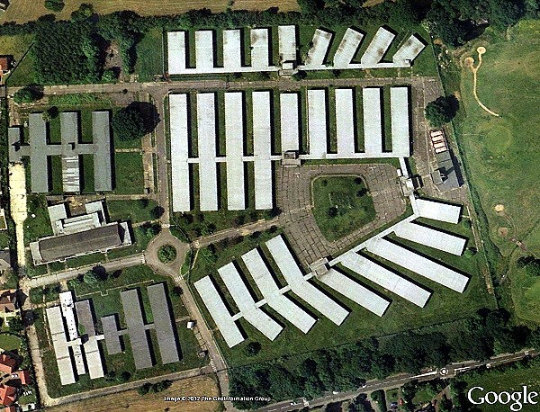
THE AVENGERS: All Done With Mirrors (Ray
Austin: May 1968)
Watney (Dinsdale Landen) drives Tara to Cramadoc
Research Station and
stops at the gate (Berry Hill Side) to show their
passes. Tara tries to
contact Watney and Major Sparshot (Peter Copley) at
the base by using
the device in his lighthouse.
Q11: Stanmore Hall, Wood
Lane, Stanmore
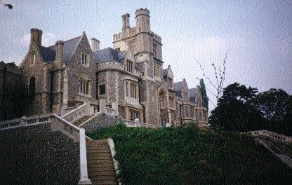
photo: Annette Hill
THE SAINT: The Hi-Jackers (David
Eaby:
June/July 1964)
Hans Lasser's country house. Jopley turns through the main gates and
returns to the house with Templar and Pargo.
THE SAINT: The Rhine Maiden (James
Hill:
November 1964)
The Schreiber Clinic.
THE SAINT: The House on Dragon's Rock
(Roger Moore: February 1966)
Carmen (Annette André) arrives at the Dragon's Rock
Research Institute
in her car after first being checked by a guard (Anthony
Blackshaw) at
the gate house, Simon Templar (Roger Moore) also
visits the Institute
in his Volvo after passing the same guard. Later Carmen sneaks Simon
past the guard into the Institute in her car.
THE BARON: The Man Outside (Roy
Baker:
September 1966) Vince arrives at the villain's hide-away with
news of
the inquest. The Baron drives through the gates in his Jensen and
approaches the house. After talking to the only apparent occupant he
leaves, then doubles back to investigate the stables. He is eventually
captured when he returns to his car.
THE AVENGERS: From Venus With Love (Robert
Day: October 1966)
Venus Browne leaves Brigadier Whitehead's house watched by Steed
(Patrick Macnee) from his Bentley.
THE AVENGERS: The Winged Avenger (Gordon
Flemyng/Peter Duffell: December 1966)
Mrs Peel and Steed arrive in the Bentley to see Professor Poole (Jack
MacGowan) testing out his wings. Mrs Peel is lured to Poole's
house but
Steed and Stanton arrive with the next strip to see Packer (Neil
Hallett) fall to his death.
THE CHAMPIONS: The Final Countdown (John
Gilling: Early 1968)
The Nazis work on their atom bomb at their headquarters.

photo: Annette Hill
THE SAINT: The Ex-King of Diamonds (Alvin
Rakoff: Summer 1968)
Janine Flambeau arrives at her father's house in her Citroen 2CV.
RANDALL AND HOPKIRK [DECEASED]:
The Trouble With Women
(Cyril Frankel: Autumn 1968)
To get help for Jeff, Marty has to queue for a seance at the Society of
Spiritualists - North London Division.
RANDALL AND HOPKIRK [DECEASED]:
All Work and No Pay
(Jeremy Summers: Early 1969)
The strange Foster brothers (Alfred Burke and Dudley Foster)
arrive
back at their huge house in their classic sports car.
THE ADVENTURER: Icons Are Forever (Cyril
Frankel: 1972)
Bradley infiltrates himself into the Castle Delguado whilst
investigating the mysterious death of a private investigator in Italy.
THE PROFFESIONALS: Blind Run (Tom Clegg:
April
1978)
Doyle (Martin Shaw) arrives at the second meeting
place with his Doctor
Hanish (Kevork Malikyan) and Anwhar Handhal a.k.a.
Tinkerbell (Ahmed
El-Shenawi). There they meet Sinbad (Yashar Adem)
and Leia (Jasmina
Hilton). Soon after a car carrying Georgio (Tariq
Yunis) and assorted
assassins arrives.
THE PROFFESIONALS: Need to Know (William
Brayne:
1979)
Bodie (Martin Shaw) and Doyle (Lewis
Collins) take Cowley (Gordon
Jackson) to the mansion to which Cowley will be interrogated
about Andy
Drake by Manton (Patrick O’Connell) and Tully (Simon
Oats).
Film:
FRANKENSTEIN MUST BE DESTROYED
(1969)
NOTHING BUT THE NIGHT
(1972)
VOICES (1973)
Television:
THRILLER: Come Out, Come Out Wherever You Are
(1974)
Q12: A41 Roundabout,
Elstree

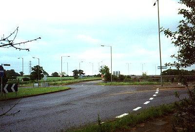
THE PRISONER: Do Not Forsake Me Oh My Darling
(Pat Jackson: April 1966)
Potter follows Number 6 in his Lotus as he drives round a roundabout
and along the A20 to Dover (“A20 Dover” sign is stuck over
the existing
“A41 Watford” sign).
Q13: Watford Road/Aldenham
Road Junction

photo: Geoff Dodd
GIDEON'S WAY: The Alibi Man (Cyril
Frankel:
February 1965)
Eric Little drives Margorie Bellman to the airport.
Q14: Edgware
GIDEON'S WAY: The Housekeeper (Leslie
Norman:
1965)
Martha Smallwood (Kay Walsh) is followed (along
Station Road) by Dept.
Supt. Warr (John Dearth). She walks into the
grounds of a church (on
Hale Lane) to lose him.
(Spotted by Jaz Wiseman October, 2005)
GIDEON’S WAY: To Catch A Tiger (Les
Norman,
April 1965)
The offices of John Borgman Enterprises Ltd. (Premier House,
112
Station Road).
(Identified by Geoff Dodd, April 2006)
THE BARON: Countdown (Robert
Asher:
October 1965)
Mannering and Cordelia accompany the police back to this police station
(rear yard of Edgeware police station on Whitchurch Lane)
after White
is killed.
(Spotted by Geoff Dodd, December 2006)
RANDALL AND HOPKIRK [DECEASED]:
You Can Always Find a Fall Guy
(Ray Austin: July 1968)
Jeff negotiates his car out of the garage (junction of High
Street and
Deansbrook Road) in exchange for Marty's mini and drives away
past the
garage.
(Spotted by Sam Denham)
RANDALL AND HOPKIRK [DECEASED]:
The Trouble with Women
(Cyril Frankel: October 1968)
In the Vauxhall Marty quizzes Jeff about his motives for taking on the
case and why he is following Paul Lang, in his limousine (back
projection from junction of High Street and Deansbrook Roaddown Burnt
Oak Broadway passing gates of Edgware General Hospital).

photo: Geoff Dodd
THE PROTECTORS: Blockbuster (Jeremy
Summers:
1973)
Caroline (Nyree Dawn Porter) checks out Glen
Bailey’s spending habits
at an exclusive car dealership (London Sports Cars, Gemini
House, 25-27
High Street).
(Identified by Bob Rocca, July 2008)
Q15: Barnet Lane at the
junction with Oak Tree Court

photo: Geoff Dodd
THE SAINT: The Well Meaning Mayor (Jeremy
Summers: 1963)
George Hackett is arrested and taken to the Seatondean Police Station.
GIDEON'S WAY: Subway to Revenge (Roy
Baker:
January 1965)
Ellen Winters chides Jimmy Lane for not reporting his attempted murder
to the local police.
GIDEON’S WAY: The Great Plane Robbery (Leslie
Norman: March-April 1965)
Gideon is at Bamford Police station when Kautsky is brought in for
questioning.
THE CHAMPIONS: The Fanatics (John
Gilling:
July 1967)
Craig and Sharon report the kidnapping of Richard Barrett to Tremayne
from a village police station.
THE SAINT: Legacy For The Saint (Troy
Ward
Baker: February 1968)
Simon arrives at the police station (8 Barnet Lane)
in a police car
disguised as a policeman in order to foil Claude's plan.
(Confirmed by Geoff Dodd)
Q16 St Johns Church,
Great Stanmore
THE SAINT: The Time to Die (Roy
Baker:
April 1968)
After following the kidnapper's instructions, Simon Templar is driven
to a derelict church (the” Old Church”).
(Identified by Ian Pearse, November 2003)
Q17
Spring Lake, Stanmore
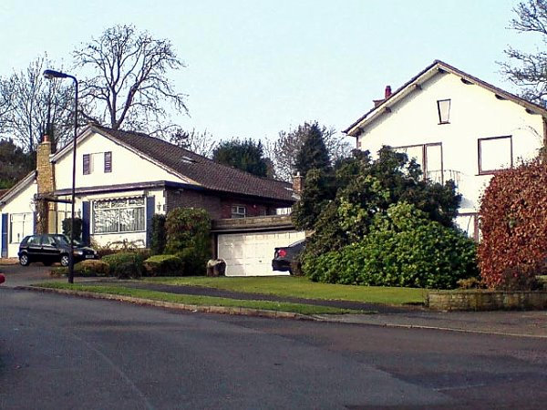
photo: Geoff Dodd
THE SAINT: The Man Who was Lucky (John
Gilling: 1962)
Simon Templar (Roger Moore) takes Jane in his Volvo
so that she can
show him the home of Lucky Joe Luckner. They park across the street and
Simon is not surprised to see a Scotland Yard car parked outside. He
also watches as a disappointed Inspector Teal leaves with his men.
Later Simon returns in his Volvo to set a trap for Luckner.
(Identified by Geoff Dodd, July 2005)
THE SAINT: When Spring is Sprung (Jim
O'Connolly: March 1967)
Simon drives Joanne Dell to her destination on the Corniche.
(Identified by Geoff Dodd, July 2005)
Q18
Stonegrove House,
Stonegrove, Edgware
GIDEON'S WAY: Subway to Revenge (Roy
Baker:
1965)
James Lane (Donald Churchill) escorts Ellen Winters
(Anne Lawson) to
her a bedsit at Stonegrove House, 86 Wells Avenue. Late one night John
Stewart (Bryan Pringle) arrives to take revenge on
Lane by killing
Ellen.
(Spotted by Jaz Wiseman, August 2005)
Q19
St Nicholas' Church,
Elstree Hill North, Elstree
RANDALL AND HOPKIRK [DECEASED]:
Whoever Heard of a Ghost Dying?
(Ray Austin: October 1968)
The clock on the church seen late at night.
(Identified by Geoff Dodd, 27th May, 2006)
Q20: The Limes, Warren
Lane, Stanmore Comon
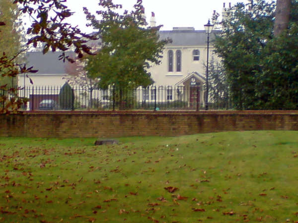
photo: Geoff Dodd
THE PROTECTORS: Vocal (Cyril Frankel:
1972)
Staking out the Pine Vale Country Club (private residence
formerly The
Limes Country Club), , The Contessa (Nyree Dawn
Porter) and Paul (Tony
Anholt) are both disguised as chauffeurs. Harry Rule (Robert
Vaughn)
watches from his car. A limousine pulls up with John Azon (David
Buck)
and Gregg (Ian Hogg) aboard. When someone from the
country club tries
to deliver a consignment of drugs to Azon things go horribly wrong.
Q21: Barham Avenue,
Borehamwood
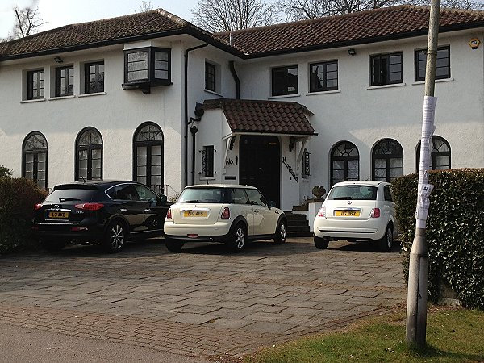
photo: Geoff Dodd
H. G. WELLS' INVISIBLE MAN:
Flight into Darkness (Peter
Maxwell: 1959)
Wilson and Sewell of the World Peace Organisation, break into the
Stephens' house and are searching it as Pat Stephens arrives home.
THE HUMAN JUNGLE: Skeleton in the Cupboard (Roy
Baker. ???)
The home of Dr Fisher (Allan Cuthbertson) where Dr.
Corder (Herbert
Lom) goes to talk about the Brindley family (Hispania,1
Barham Avenue).
(Identified by Geoff Dodd, April 2013)
RETURN OF THE SAINT: The Debt Collectors (Leslie
Norman: 1978)
Simon Templar (Ian Ogilvy) takes Jerry (Mary
Tamm) home after her
accident in the park. After the adventure is over Sir Charles (Geoffrey
Keen) arrives just in time to thank Templar.
(Identified by Alan Field, June 2008)
Q22: Hale Lane / Deans
Lane, Edgware
H. G. WELLS' INVISIBLE MAN:
The Rocket (Quentin
Lawrence: 1959)
The lorry carrying the disguised rocket drives through the centre of
town, right past a policeman on point duty.
(Identified by Bob Rocca, July 2008)
Q23: Warren Lane, Stanmore
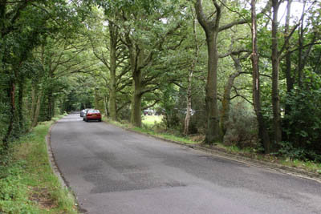
photo: Alan Field
GIDEON’S WAY: The Lady Killer (Leslie
Norman:
September 1964)
Robert Carne drives to the country cottage where he and Marion Grove
are to stay.
(Identified by Alan Field, September 2008)
THE SAINT: The Damsel In Distress (Peter
Yates: Aug/Sep 1964)
Allesandro and Guido see Simon Templar being driven unconscious by
Guyiseppe Rolfieri (Harold Kasket) away from his
villa. They give
chase, but loose him at a junction. Guyiseppe and Arthur (Ray
Austin)
attempt to stage an accident for The Saint, but Simon is able to steer
his runaway vehicle. Later Simon, Allesandro and Guido kidnap Guyiseppe
and take him to Florence Aero Club.
(Identified by Alan Field, September 2008)
GIDEON’S WAY: The Great Plane Robbery (Leslie
Norman: March-April 1965)
After leaving the Airport with the stolen gold the robbers drive along
the A134 where a decoy van driven by Kautsky is waiting for them.
(Identified by Alan Field, September 2008)
THE SAINT: The Saint Bids Diamonds (Leslie
Norman, April/May 1965)
Simon Templar is driven to Graner’s villa by Madame Calliope. The next
day, Graner travels the same road on his way home. Later Christine
Graner’s drives Simon into town.
(Identified by Alan Field, September 2008)

photo: Alan Field
THE SAINT: The Fast Women (Leslie
Norman:
September 1966)
After driving away from his hotel Carl Tordoff is perused by Simon
Templar and Paddy in Templar’s Volvo through the countryside.
(Identified by Alan Field, September 2008)
THE SAINT: Flight Plan (Roy
Baker:
September 1966)
Simon drives his Volvo to RAF Blakewell. Later the villains drive in a
taxi to RAF Blakewell and drive off the road to deliver Mike Gregory to
the waiting Osprey.
(Identified by Alan Field, September 2008)
THE AVENGERS: False Witness (Charles
Crichton: June 1968)
John Steed drives to a nearby wood with Mellville in his yellow Rolls
Royce. Steed (Patrick Macnee) parks the car (in
Warren Lane car park
opposite the cricket pitch), tells Melville (Barry
Warren) to follow
him and then punches Melville in the face.
(Identified by Alan Field, September 2012)
DEPARTMENT S: Soup of the Day (Leslie
Norman:
Spring 1969)
Fernando Segres is taken from Lisbon to be thrown into sea. Jason
Follows in his car (cars enter from Warren Lane and pass
behind the
traffic island into ‘The Grove’).
(Identified by Alan Field, September 2008)
Q24: Canons Park, Canons
Park
GIDEON'S WAY: The Housekeeper (Leslie
Norman:
1965)
Percy Whitehead (Oliver Johnson) visits the park
with his dog and is
greeted by Geoffrey Carr (Middleton Woods) by the
gazebo.
(Identified by Alan Field, April 2009)
Q25: Junction of Warren
Lane and Wood Lane, Stanmore
THE BARON: There's Someone Close Behind You
(Roy Baker: December 1965)
After Wilde's jailbreak Mannering stows away in the yellow van Wilde is
driving to Seldon Village.
(Identified by Geoff Dodd, May 2009)
Q26: Deacons Hill Road
THE AVENGERS: Quick-Quick Slow Death (James
Hill: October 1965)
Willi Fehr (Michael Peake) parks his pram outside a
telephone box and
steps in to make a call. The brake on the pram fails and it runs off
down hill with Willi chasing it.
(Spotted by Al Samujh, July 2009)
Q27: Hankins Lane/Stockton
Gardens, Mill Hill
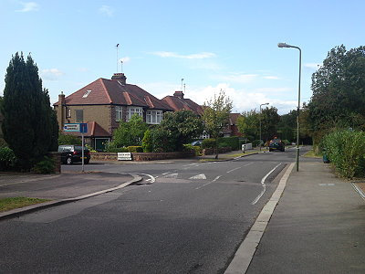

photos: Geoff Dodd
THE AVENGERS: Who's Who??? (John
Moxey: April
1967)
After escaping from Doctor V Krelmar’s home, The Manor House,
Hambledon, the transformed Steed and Mrs Peel drive toward London in
Steeds Bentley. Later they are pursued by Tulip as they leave London.
(Identified by Geoff Dodd, September 2009)
Q28: Woodcock Hill Farm,
Barnet Lane, Borehamwood
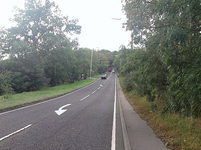
photo: Geoff Dodd
RANDALL AND HOPKIRK [DECEASED]:
All Work and No Pay
(Jeremy Summers: Early 1969)
Jeanie drives her mini to the Foster brothers’ mansion for a
demonstration of their spiritualist powers (filmed opposite
Woodcock
Hill Farm looking west towards Deacons Hill Road).
(Identified by Geoff Dodd, September 2009)
Q29: Garrick Court, Green
Lane, Edgware
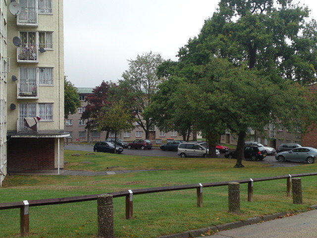
photo: Geoff Dodd
DANGER MAN: The Mirror's New (Michael
Truman: 1964)
Drake and Esser follow Edward Bierce to the flat of Penny where he make
a call to hi wife from a nearby telephone box before entering. The
following morning Bierce leaves and Drake enters.
(Identified by Greg Mishevski, a.k.a. SainT and Mark O on the
Britmovie
Forum)
Q30: Nutt Grove, private
road off Edgware Way (A41), Edgware
THE SAINT: Marcia (John Krish:
1963)
Simon Templer arrives in his Volvo at the Reeland Nursing Home to
interview Frank Landon.
(Identified by Simon Coward, March 2010)
Q31: Apex Corner, Mill Hill
GIDEON'S WAY: The Housekeeper (Leslie
Norman:
1965)
In the back of a police car Detective Superintendent Warr is told to
investigate the late Mr. Henderson’s accounts by Commander George
Gideon (back projection of Apex corner driving towards
Borehamwood).
(Identified by Ian Rogers, March 2010)
Q32: Radnor Hall, Allum
Lane, Elstree (demolished, the site is now Elstree Household
Waste
Recycling Centre)
DANGER MAN: The Lonely Chair (Charles
Frend: ??)
John Drake, posing as Patrick Laurence, and Noelle Laurence are
delivered by ambulance to the house where Sally Laurence is being held.
(Identified by Simon Finch, April 2011)
THE HUMAN JUNGLE: The Man Who Fell Apart (Roy
Baker: ??)
After her fall a Bedford ambulance arrives at a country hospital with
Joy on board (same footage as seen above).
(Identified by Simon Finch, April 2011)
Film:
MURDER SHE SAID
(1961) - Ackenthorpe Hall
Q33: Deacon’s Hill Road,
Elstree
THE HUMAN JUNGLE: Wild
Goose Chase (Vernon Sewell: ???)
Dr Charles Dunn and his wife Anna arrive home, 14 Church Road (59
Deacon’s Hill Road), to find their babysitter, Mary, tied up.
Later
Jennifer Corder (Sally Smith) drops Mary Thomas (Francesca
Annis) off
at her home (89 Deacon’s Hill Road) and invites her
to join a motorised
treasure hunt which they call a 'Goose Chase'.
(Identified by Geoff Dodd, October 2013)
Q34: Brockley Hill Farm,
Brockley Hill
THE BARON: Something for a Rainy Day
(Cyril Frankel: November 1965)
John Mannering (Steve Forest), Cordelia Winfield (Sue
Lloyd) and
Charlotte Russell (Lois Maxwell) track Seldon to a
caravan at the Beau
Rivage camp site.
(Identified by Geoff Dodd, February 2015)
Q35: Aldenham Reservoir
causeway, Elstree Road/Watford Road, Elstree

THE BARON: Something for a Rainy Day
(Cyril Frankel: November 1965)
After the leaving the caravan site, John Mannering, Cordelia Winfield
and Anne Seldon leave in a Citroën looking for something
familiar.
Q36: Broadlawns, Barnet
Lane, Elstree

DEPARTMENT S: The Perfect Operation (Cyril
Frankel: February 1969)
Jason King (Peter Wyngarde) joins Sir Curtis
Seretse (Dennis Alaba
Peters) for a game of croquet as they discuss Haslet-Wood
case.
(Identified by Geoff Dodd, March 2022)
Q37: Boreham Holt,
Borehamwood
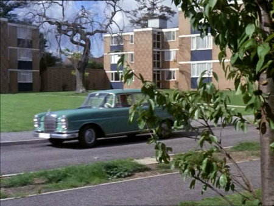
THE CHAMPIONS: The Perfect Operation (Cyril
Frankel: September 1967)
Craig is driving in his Mercedes as he realises that Richard is being
kidnapped from his flat.
(Identified by Michael Richardson, July 2022)
Q38:
New Elstree Studios,
Elstree Road (demolished)
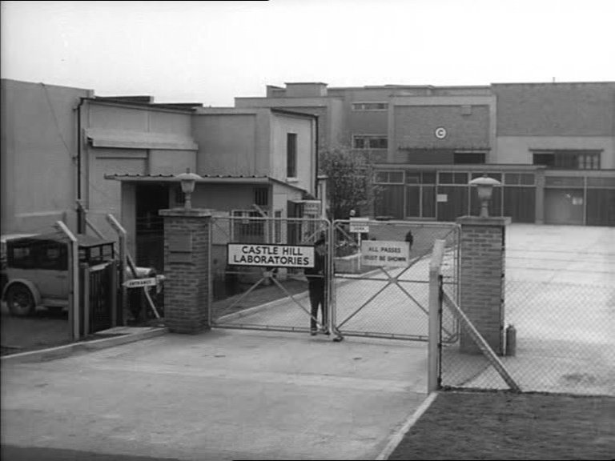
H.G. WELLS' INVISIBLE MAN:
Flight Into Darkness (Peter
Maxwell: 1959)
The entrance to Castle Hill Laboratory.
THE CHEATERS: The Fine Print (Max
Varnel: 1961)
THE CHEATERS: Libel (MaxVarnel:
1961)
THE CHEATERS: The Schemers (Max
Varnel: 1961)
THE CHEATERS: Fire (Frank
Marshall:1961)
THE
CHEATERS: A Tale of
Two Ships (Max Varnel: 1961)
THE CHEATERS: Flash in the Sky (Frank
Marshall:1961)
THE CHEATERS: Affairs of the Heart (Max
Varnel:1961)
THE CHEATERS: A Hood from Canada (Frank
Marshall:1961)
THE CHEATERS: A Hair of the Dog (Max
Varnel:1961)
THE CHEATERS: Case of George Peterson (Bill
Lewthwaite: 1961)
THE CHEATERS: Knight of the Road (Max
Varnel:1961)
Film:
UP THE CREEK
(1958)
Q39: Station Road/Hale
Lane, Edgware, HA8
SABER OF LONDON: Strong Man Out (Max
Varnel:
1959)
After failing to find Joe Ward in his office (Natwest Bank,
Penshurst
Gardens/Hale Lane) Mark Saber (Donald Grey)
drives off to see the
bookmaker in his 'usual haunts'.
Q40: Woodside, Allum Lane (redeveloped)

THE HUMAN JUNGLE: Dual Control (Roy
Baker, ???)
Jane Harris (Mary Steele) arrives at Rest Harrow
School for Handicapped
Children in her Hillman Imp to interview the Matron (Peggy
Marshall) on
behalf of Dr Corder. Later Jane Harris takes Jane Falcon (Annette
Andre) back to work at Rest Harrow, but things do not work
out well.
(Identified by Geoff Dodd, July 2023)
Q41: Dukes
Avenue, Stanmore
GIDEON'S WAY: Subway to Revenge (Roy
Baker: January 1965)
As he is in the area Commander Gideon (John Gregson)
takes the
opportunity to visit Martha Robson’s home (15 Dukes Avenue).
(Identified by Geoff Dodd, February 2024)
Q42: Peter’s Close,
Stanmore
GIDEON'S WAY: Subway to Revenge (Roy
Baker: January 1965)
Commander Gideon (John Gregson). and Detective Chief Inspector David
Keen (Alexander Davion) are at number 29 (redeveloped) arresting the leader of a gang
involved in an armed robbery..
(Identified by Geoff Dodd, February 2024)
To R